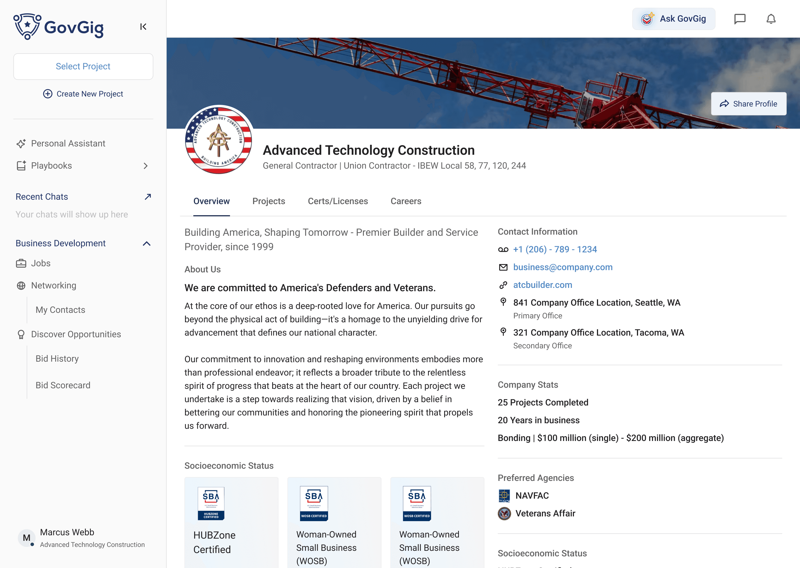
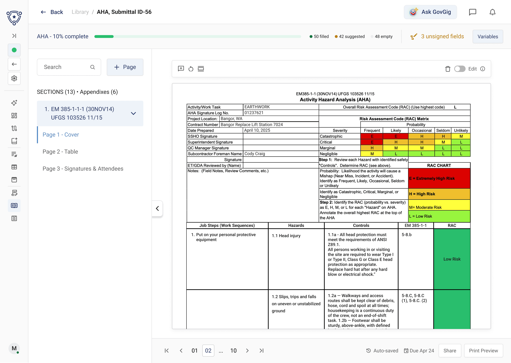
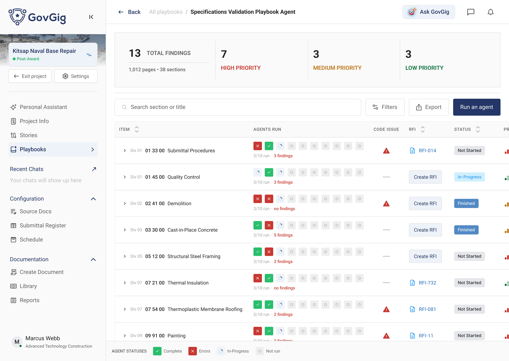
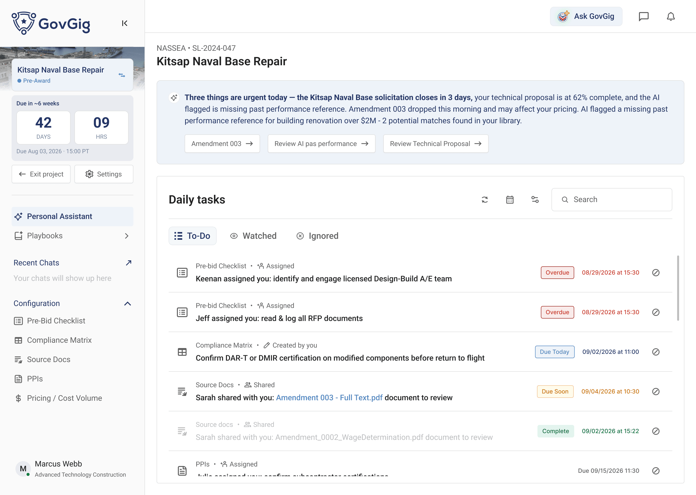
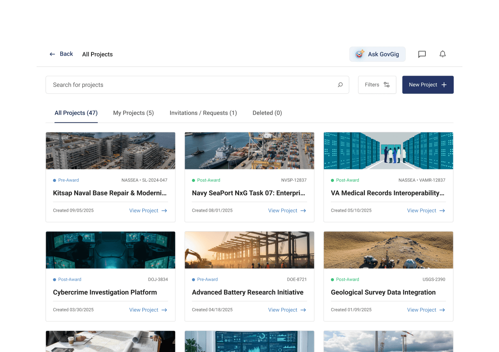
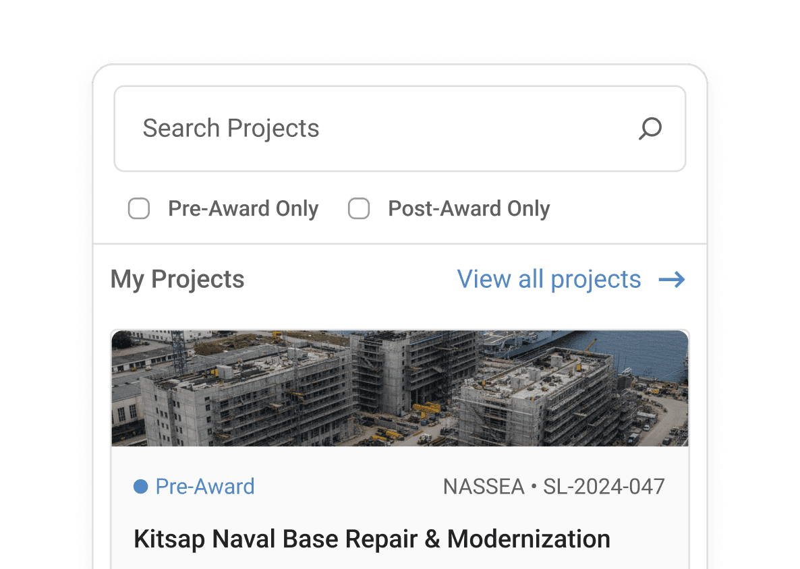
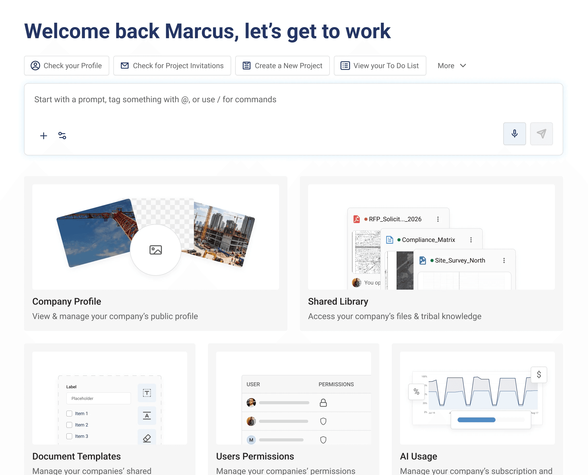
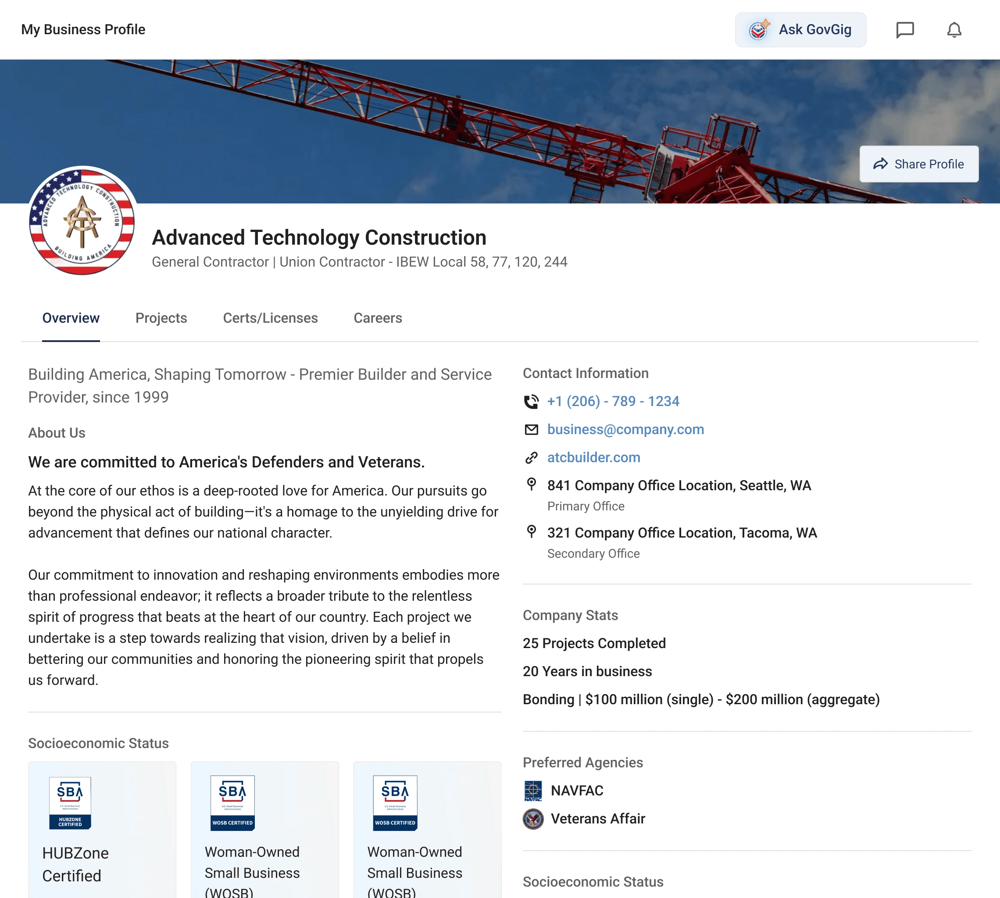

A digital war chest for contractors with high demand workloads
Quick-summary
90-sec read
- The Issue
- Outdated federal construction workflows were costing teams time, revenue and energy.
- My Job
- I was the core senior designer that led product vision & shaped + shipped designs while managing a team of 2.
- My deliverables
- AI-Powered Prototypes/Wireframes, Rapid Brainstorming Sessions, Weekly Design Standups, Dev-Ready Flows.
- Results
- An end-to-end construction management platform currently in it's seed stage, gaining users month over month.




When I started on GovGig I asked, How do current day-to-day operations look like?
Stakeholder workshop sessions revealed insights into how contractors use software in practice. I found that…
- Customization was necessary to enable companies to tailor the platform to their workflows.
- Familiar UX/UI patterns were needed to bridge existing workflows and real-life tools.
- Evolving industry needs meant we needed scalable and functional solutions.



